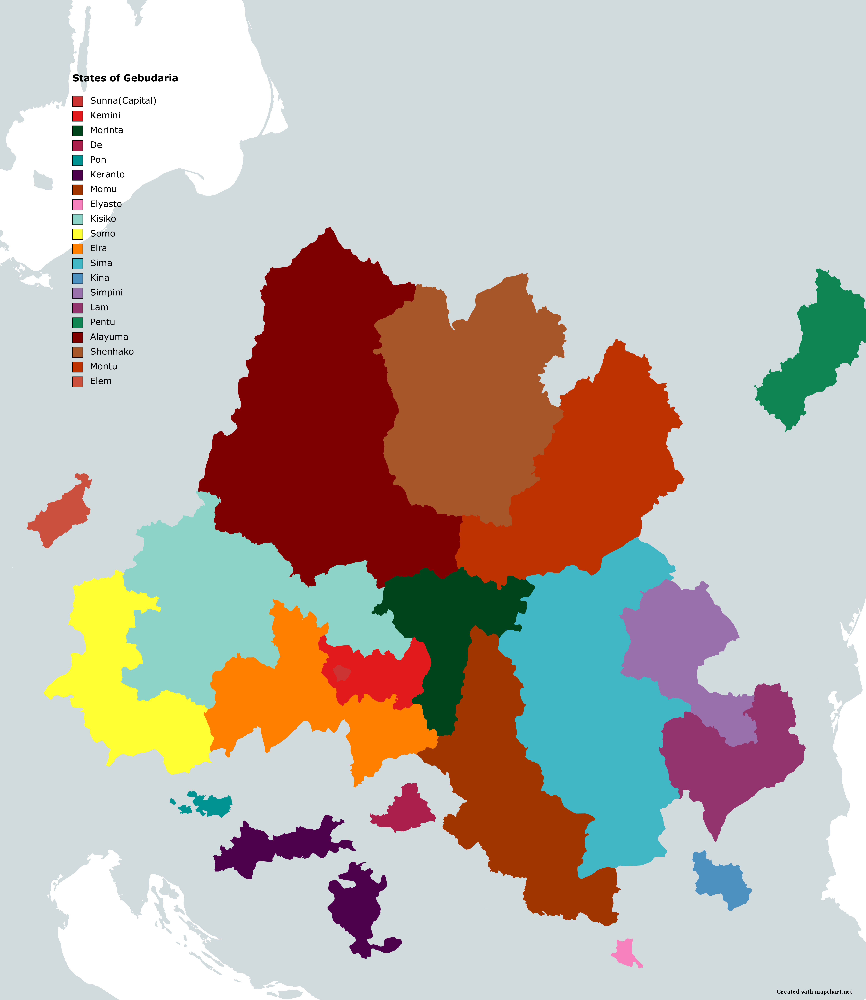
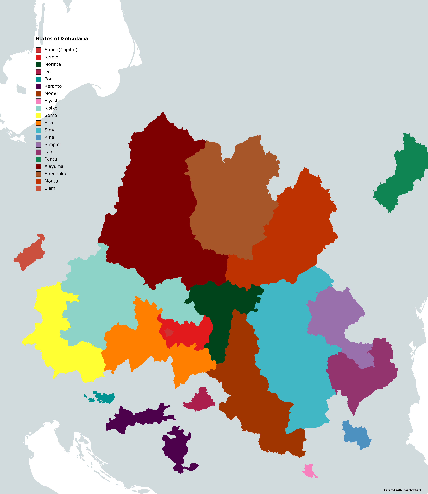

Constitution of Gebudaria:
Preamble:
This Nation of the Gebudi Island is a savior of the Native peoples of the thousands of ancestors.
We Create to serve these ancient people.
Article 1: The Parliment
Part 1:
The members of the Parliment shall be elected by a term of 4 years as the Chancoller.
On every 29th of Febuary, on every leap year, there will be an election.
Part 2:
There shall be 3 parlimant members for each state. Additional Leaders, known as Reprisentatives of the Assembly,
shall also be elcted, 1 Reprisentative for each 200,000 people from each state. For a state with 800,000 population, there shall be
4 reprisentatives, one for each 200,000 people.
Article 2: The federal government
Part 1:
The Chancoller is the head
of the Government. The jead of the military is Prime Minister is the head of the Military and state. The Prime Minister shall be
elected every 5 years, on the 5th of May. Only elections for the Prime Minister on years that end with 0 or 5. The Prime Minister can
also be known as the Leader of the 5th. Aslo, the Chancoller is elected by the number of states they have the majority in.
The Prime Minister is elected by popular vote.
Part 2:
To pass a law, the Chancoller must introduce it to the Assembly of Reprisentatives. They may than vote on the matter,
and, if passed, the Law will go to the Prime Minister who than must approve it. If the Prime Minister does not approve of the bill,
A compromise must be made between the Chancoller and the Prime Minister.
Article 3: Amendmants and other political subjects
Part 1:
An amendmant may be passed to the constitution when the Prime Minister Introduces it to the Assembly. If
The Assembky pproves it, it goes into action.
Part 2:
The job of appointing Judges, heads of the individual branches of the Military, and the removal of a the Prime Minister or
Chancoller, shall be done by the Parliment on a Vote. The head of the Parliment shall be appointed by the Parliment itself, who does not
than controll the Parliment, but issues opinions and heads the vote and meetings of the Parliment when
in session.
Part 3:
The King/Queen of Gebudaria must spprove any Amendmant or Removal of the Prime Minister. The Parliment
may not remove the Monarchy itself, but may replace the monarch if neccecary. This may only be done every 75 years, and
only if neccasary.
The sounds and pronounciation guide will be displayed below.
.png)
.png) 
